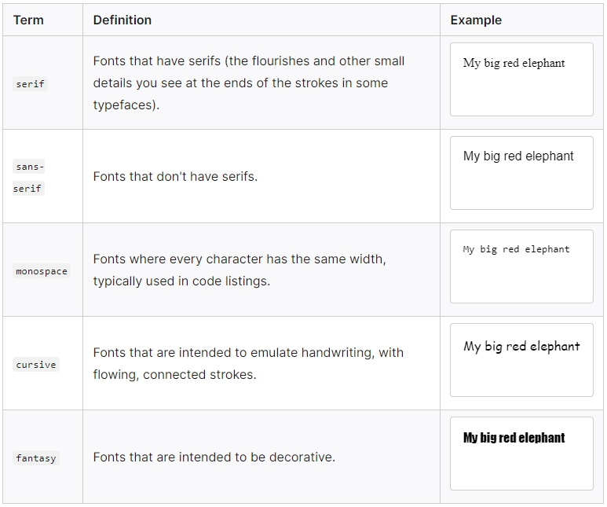

Color
The color property sets the color of the foreground content of the selected elements, which is usually the text, but can also include a couple of other things, such as an underline or overline placed on text using the text-decoration property.
color can accept any CSS color unit, for example:
This will cause the paragraphs to become red, rather than the standard browser default of black, like so:
Tommy the cat
Said Tommy the Cat as he reeled back to clear whatever foreign matter may have nestled its way into his mighty throat. Many a fat alley rat had met its demise while staring point blank down the cavernous barrel of this awesome prowling machine. Truly a wonder of nature this urban predator — Tommy the cat had many a story to tell. But it was a rare occasion such as this that he did.
Font families
To set a different font for your text, you use the font-family property — this allows you to specify a font (or list of fonts) for the browser to apply to the selected elements. The browser will only apply a font if it is available on the machine the website is being accessed on; if not, it will just use a browser default font. A simple example looks like so:
This would make all paragraphs on a page adopt the arial font, which is found on any computer.
Default fonts
CSS defines five generic names for fonts: serif, sans-serif, monospace, cursive, and fantasy. These are very generic and the exact font face used from these generic names can vary between each browser and each operating system that they are displayed on. It represents a worst case scenario where the browser will try its best to provide a font that looks appropriate. serif, sans-serif, and monospace are quite predictable and should provide something reasonable. On the other hand, cursive and fantasy are less predictable and we recommend using them very carefully, testing as you go. The five names are defined as follows:
Font stacks
Since you can't guarantee the availability of the fonts you want to use on your webpages (even a web font could fail for some reason), you can supply a font stack so that the browser has multiple fonts it can choose from. This involves a font-family value consisting of multiple font names separated by commas, e.g.,
In such a case, the browser starts at the beginning of the list and looks to see if that font is available on the machine. If it is, it applies that font to the selected elements. If not, it moves on to the next font, and so on.
Font size
In our previous module's CSS values and units article, we reviewed length and size units. Font size (set with the font-size property) can take values measured in most of these units (and others, such as percentages); however, the most common units you'll use to size text are:
- px (pixels): The number of pixels high you want the text to be. This is an absolute unit — it results in the same final computed value for the font on the page in pretty much any situation.
- ems: 1 em is equal to the font size set on the parent element of the current element we are styling (more specifically, the width of a capital letter M contained inside the parent element). This can become tricky to work out if you have a lot of nested elements with different font sizes set, but it is doable, as you'll see below. Why bother? It is quite natural once you get used to it, and you can use em to size everything, not just text. You can have an entire website sized using em, which makes maintenance easy.
- rems: These work just like em, except that 1 rem is equal to the font size set on the root element of the document (i.e. html), not the parent element. This makes doing the maths to work out your font sizes much easier, although if you want to support really old browsers, you might struggle — rem is not supported in Internet Explorer 8 and below.
The font-size of an element is inherited from that element's parent element. This all starts with the root element of the entire document — html — the standard font-size of which is set to 16px across browsers. Any paragraph (or another element that doesn't have a different size set by the browser) inside the root element will have a final size of 16px. Other elements may have different default sizes. For example, an h1 element has a size of 2em set by default, so it will have a final size of 32px.
Font style, font weight, text transform, and text decoration
CSS provides four common properties to alter the visual weight/emphasis of text:
- font-style: Used to turn italic text on or off. Possible values are as follows (you'll rarely use this,
unless you want
to turn some italic styling off for some reason):
- normal: Sets the text to the normal font (turns existing italics off).
- italic: Sets the text to use the italic version of the font, if available; if not, it will simulate italics with oblique instead.
- oblique: Sets the text to use a simulated version of an italic font, created by slanting the normal version.
- font-weight: Sets how bold the text is. This has many values available in case you have many font variants
available
(such as -light, -normal, -bold, -extrabold, -black, etc.), but realistically you'll rarely use any of them
except for
normal and bold:
- normal, bold: Normal and bold font weight.
- lighter, bolder: Sets the current element's boldness to be one step lighter or heavier than its parent element's boldness.
- 100 – 900: Numeric boldness values that provide finer grained control than the above keywords, if needed.
- text-transform: Allows you to set your font to be transformed. Values include:
- none: Prevents any transformation.
- uppercase: Transforms all text to capitals.
- lowercase: Transforms all text to lower case.
- capitalize: Transforms all words to have the first letter capitalized.
- full-width: Transforms all glyphs to be written inside a fixed-width square, similar to a monospace font, allowing aligning of, e.g., Latin characters along with Asian language glyphs (like Chinese, Japanese, Korean).
- text-decoration: Sets/unsets text decorations on fonts (you'll mainly use this to unset the default
underline on links
when styling them). Available values are:
- none: Unsets any text decorations already present.
- underline: Underlines the text.
- overline: Gives the text an overline.
- line-through: Puts a strikethrough over the text.